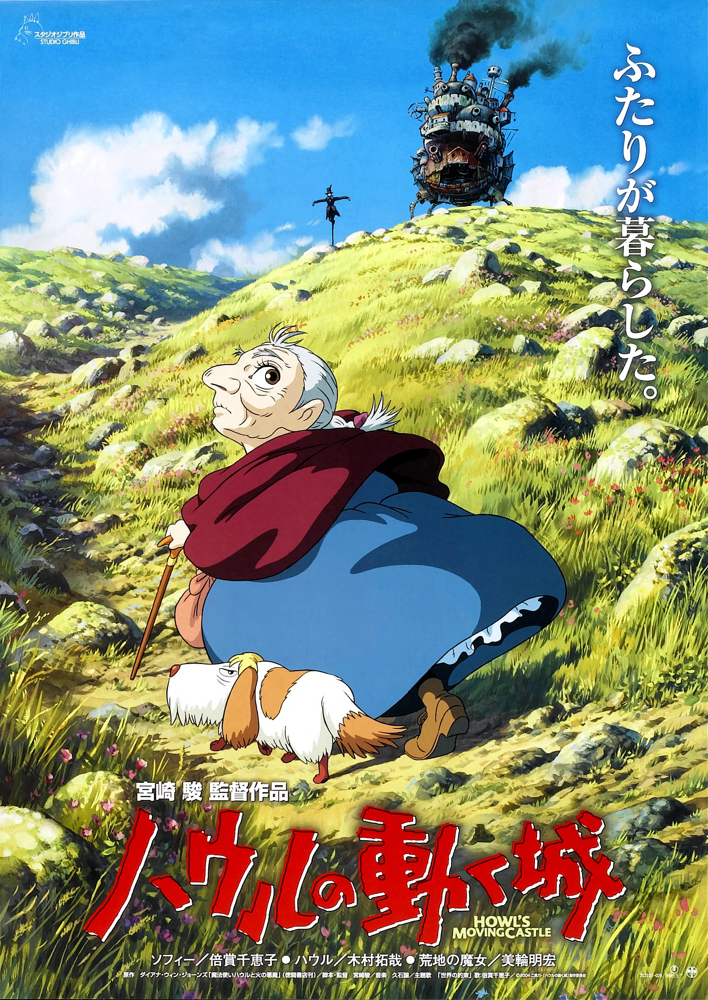
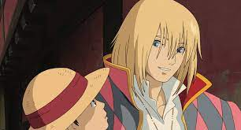
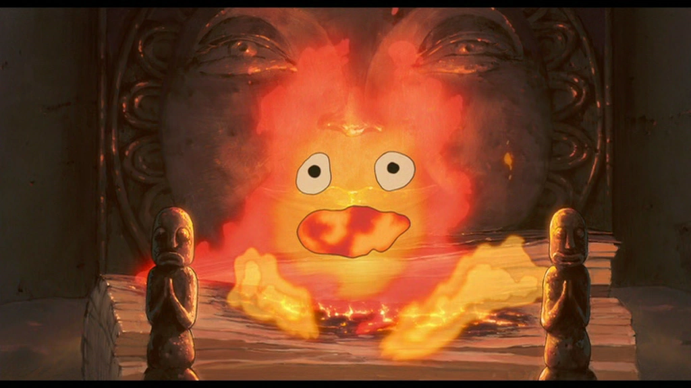
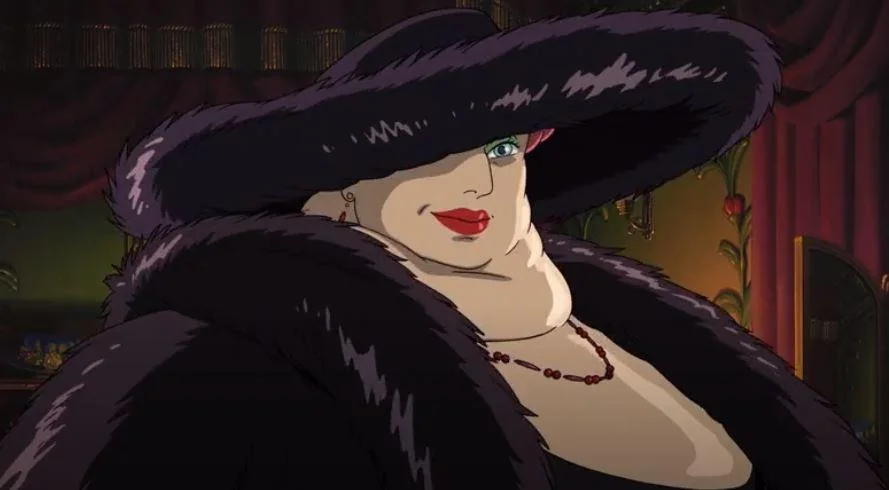

É um filme japonês de animação e fantasia lançado em 2004, vagamente baseado no romance Howl's Moving Castle (1986) da dramaturga britânica Diana Wynne Jones.
Contou com a direção junto ao roteiro de Hayao Miyazaki e foi produzido por Toshio Suzuki. O filme é ambientado num reino fictício onde tanto a magia como a tecnologia — especificamente do século XX — predominam, enquanto ocorre uma guerra entre dois reinos. A história segue a vida da jovem Sophie (voz de Chieko Baisho) que é transformada numa idosa após uma bruxa entrar na sua loja e amaldiçoá-la. Logo após, ela embarca em uma grande aventura com o mago Howl (voz de Takuya Kimura).

O Impacto e a Estética do Filme
Influenciado pela oposição de Miyazaki à invasão dos Estados Unidos ao Iraque, em 2003, o filme contém fortes temas
anti-guerra. Miyazaki afirmou que "sentia muita raiva" sobre a guerra ocorrida no Iraque, o levando a fazer um
longa-metragem onde presumia uma má recepção nos Estados Unidos. Explora também o tema da velhice retratando
positivamente a idade como algo que concede liberdade à protagonista. Além de conter elementos feministas,
trazendo mensagens sobre o valor da compaixão. Em 2013, Miyazaki descreveu Hauru no Ugoku Shiro como uma de suas
criações favoritas, explicando seu desejo de transmitir a mensagem de que "a vida vale a pena ser vivida" e pensava
que isso nunca iria mudar. O filme é tematicamente distinto do romance, enquanto o mesmo se concentra em desafiar as
normas de classe e gênero, a película se centraliza no amor, na lealdade pessoal e nas consequências destrutivas da
guerra.
Personagens Principais
Sophie
É a personagem principal. é uma jovem simples amaldiçoada a viver como uma velha. Ela também é uma personagem
que se torna vítima de clichês de contos de fadas simplesmente por acreditar neles. Sophie é filha de um chapeleiro e a
mais velha de três irmãs.
Howl

Hauru Jenkinsu Pendoragon é um poderoso mago que vive na terra de Ingary . Originalmente Howell Jenkins de Gales,
ele fazia parte de uma fraternidade informal de magos na Terra. Ele atravessou um portal mágico para Ingary , onde se tornou conhecido
e respeitado como um dos magos mais poderosos que já existiram. Ele possui um castelo móvel
e espalha rumores sobre si mesmo para manter sua privacidade, optando por ficar sozinho e se esconder de todos os conflitos.
Calcifer

Calcifer é um demônio de fogo em um contrato mágico com Wizard Howl . Ele era originalmente uma estrela cadente,
a quem Howl conseguiu captar antes de cair na terra e se extinguir. Ele é uma criatura muito poderosa, com muita habilidade mágica,
embora não possa ir além dos confins da lareira em que Uivo o mantém sem a ajuda do mago. Calcifer é o demônio do fogo residente
de Howl. Como resultado de uma barganha misteriosa com Howl alguns anos atrás, ele concorda em aquecer e abastecer o castelo.
Embora ele esteja ligado à lareira, ele tem uma grande quantidade de magia. Ele promete usar sua magia para quebrar a maldição
sobre Sophie, desde que ela quebre o contrato entre ele e Howl. Uivo descreve Calcifer como "seu ponto mais fraco",
porque Calcifer não daria outro demônio se ele entrasse no castelo, mesmo que tivesse intenções hostis.
A Bruxa do Deserto

A Bruxa do Deserto é uma das principais vilãs do filme O Castelo Animado .
Seduzida por caminhos malignos, esta outrora grande feiticeira se transformou em uma bruxa má.
Ela odeia Howl por tê-la abandonado. Depois que ele resgata Sophie, a bruxa lança uma maldição sobre ela.
Trilha Sonora
A trilha sonora original de Hauru no Ugoku Shiro foi inteiramente composta por Joe Hisaishi, colaborador habitual de Miyazaki,
e interpretada pela Orquestra Filarmônica Novo Japão. Um álbum contendo todas as 26 faixas do filme foi lançado no Japão
em 19 de novembro de 2004, pela Tokuma Shoten. Em destaque, a canção de
abertura resplandece ao cenário da era vitoriana na trama e tem uma ludicidade suntuosa que é o reflexo do carisma de Howl.
Confira Aqui!
Influência de Castelo Animado
O Castelo Animado é uma obra-prima da animação que influenciou o público de diversas formas,
transmitindo mensagens sobre amor, coragem, autodescoberta, anti-guerra e autoestima.
.png)